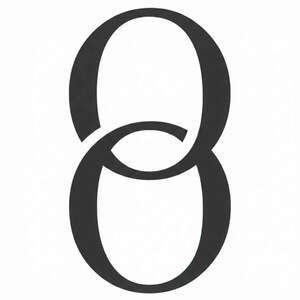

Trade Mark Journal No.2026/010 6 March 2026
UK00004343745 22 February 2026 (14)

- Class 14
- Jewellery of precious metals; jewellery cases; jewellery boxes; jewellery boxes of precious metals; jewellery, precious stones; jewellery articles; jewellery being articles of precious metals; jewellery being articles of precious stones; fitted jewellery boxes; jewellery cases; jewellery chain; jewellery chain of precious metal for anklets; jewellery chain of precious metal for bracelets; jewellery chain of precious metal for necklaces; jewellery coated with precious metal alloys; jewellery coated with precious metals; jewellery containing gold; jewellery fashioned from bronze; jewellery fashioned from non-precious metals; jewellery fashioned of cultured pearls; jewellery fashioned of precious metals; jewellery fashioned of semi-precious stones; jewellery for personal adornment; jewellery for personal wear; jewellery in non-precious metals; jewellery in precious metals; jewellery in semi-precious metals; jewellery in the form of beads; jewellery incorporating diamonds; jewellery incorporating pearls; jewellery incorporating precious stones; jewellery made from gold; jewellery made from silver; jewellery made of bronze; jewellery made of crystal; jewellery made of crystal coated with precious metals; jewellery made of glass; jewellery made of non-precious metal; jewellery made of plastics; jewellery made of plated precious metals; jewellery made of precious metals; jewellery made of precious stones; jewellery made of semi-precious materials; jewellery rope chain for anklets; jewellery rope chain for bracelets; jewellery rope chain for necklaces; jewellery stones.
Honey Willow Ltd